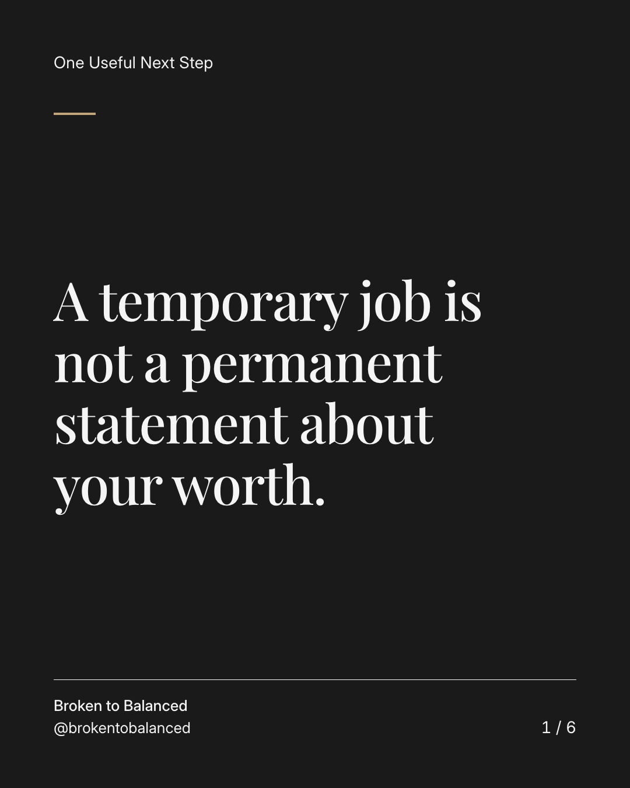
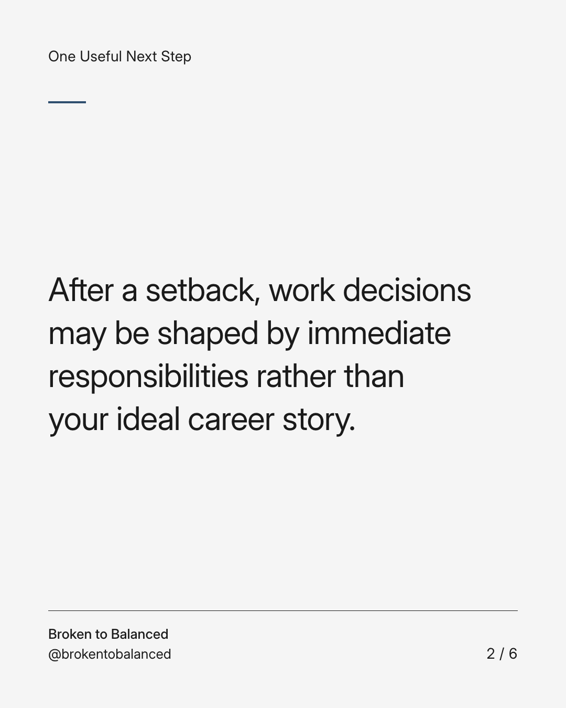
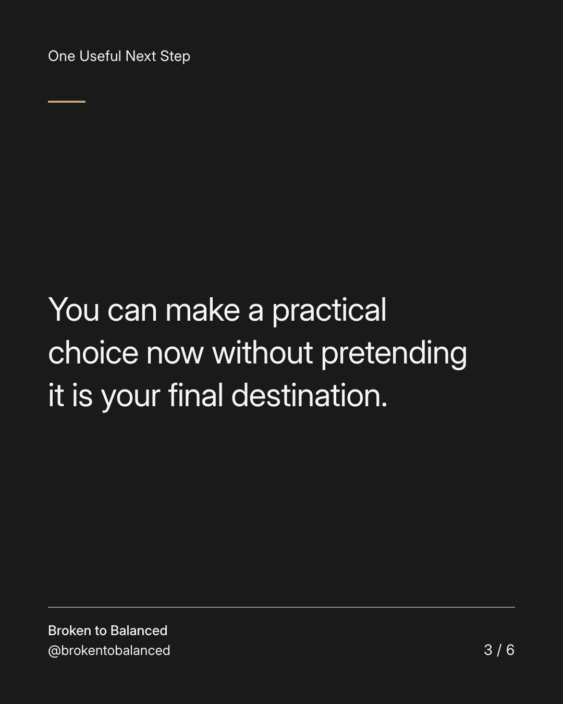
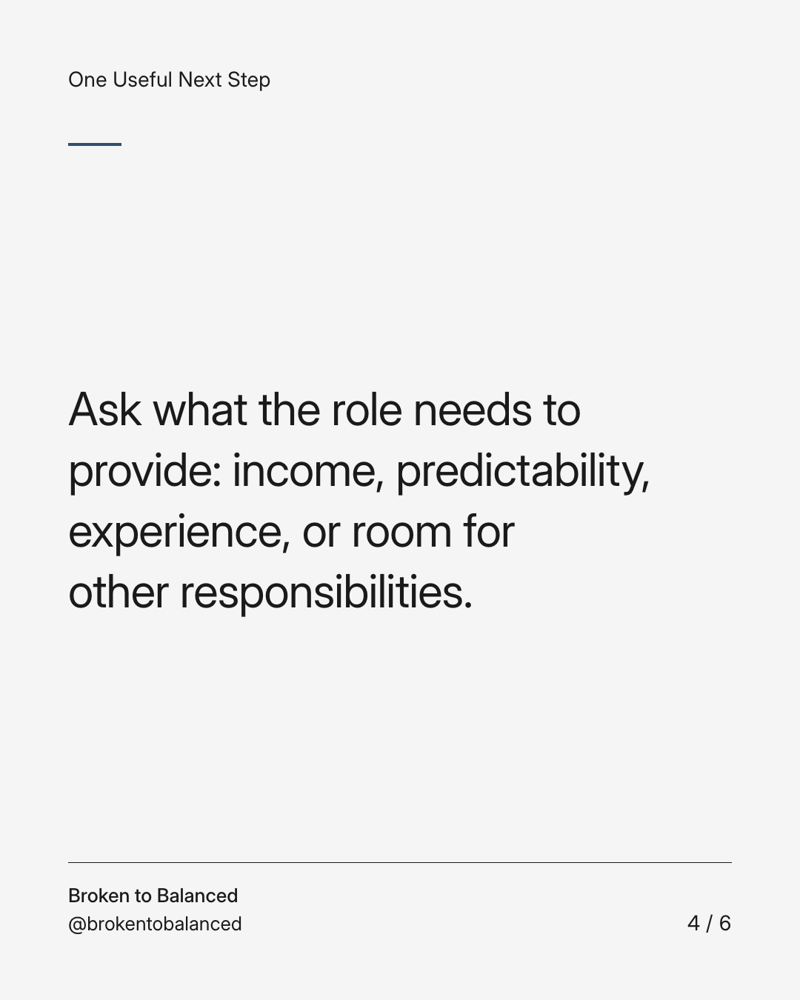
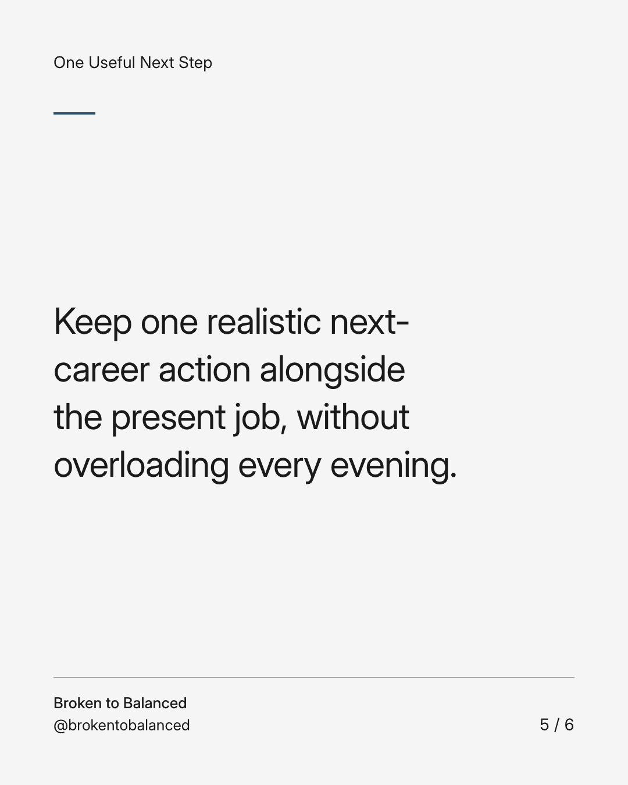

Exact text and accessibility text
A temporary job is not a permanent statement about your worth.
Slide 1 of 6. A temporary job is not a permanent statement about your worth.


Exact text and accessibility text
After a setback, work decisions may be shaped by immediate responsibilities rather than your ideal career story.
Slide 2 of 6. After a setback, work decisions may be shaped by immediate responsibilities rather than your ideal career story.


Exact text and accessibility text
You can make a practical choice now without pretending it is your final destination.
Slide 3 of 6. You can make a practical choice now without pretending it is your final destination.


Exact text and accessibility text
Ask what the role needs to provide: income, predictability, experience, or room for other responsibilities.
Slide 4 of 6. Ask what the role needs to provide: income, predictability, experience, or room for other responsibilities.


Exact text and accessibility text
Keep one realistic next-career action alongside the present job, without overloading every evening.
Slide 5 of 6. Keep one realistic next-career action alongside the present job, without overloading every evening.

Exact text and accessibility text
Share this with someone who feels embarrassed about choosing stability.
Slide 6 of 6. Share this with someone who feels embarrassed about choosing stability.
Exact caption
Plain-text fallback: select and copy the caption.